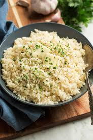

Rice

The most important cereal crop in the developing world
The staple food of over half the world's population.
It is generally considered a semi-aquatic annual grass plant.
Ingredients
- 2 cups water
- ½ teaspoon salt
- 1 tablespoon butter or oil optional
- 1 cup long grain white rice
Steps
- Bring the water to boil in a medium saucepan
- Add the salt and butter and allow the butter to melt
- stir in the rice. Let the water return to a light simmer
- When the rice is cooked, turn off the heat and let it sit for another couple of minutes to finish absorbing any liquid